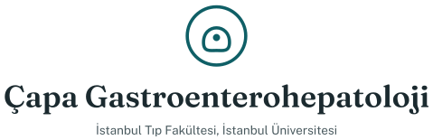
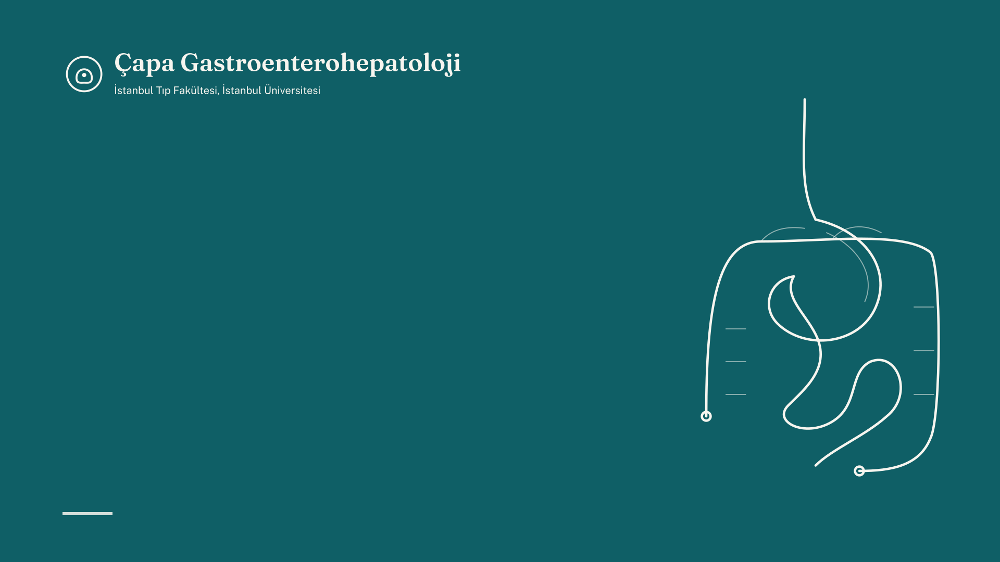

Bilim dalını bir sunumda, posterde, basın bülteninde veya bir ortağın web sitesinde tutarlı biçimde göstermek için gerekenler: logo dosyaları, renkler, yazı tipleri, kurum adının doğru yazımları, hazır tanıtım metinleri ve şablonlar. Dosyalar bilim dalının kendi çalışmaları için serbestçe, ortak etkinlik ve yayınlar için izinle kullanılabilir.
Logo
İşaret, sadeleştirilmiş bir mide ve tek bir noktayı çevreleyen bir çember: endoskopun gördüğü. Yazı Fraunces ile dizilmiştir; her dosyada yazı eğriye çevrildiği için dosyalar her bilgisayarda aynı görünür. Tüm seti zip olarak indirin veya ihtiyacınız olan dosyayı seçin.
Bu işaret bilim dalının web sitesi, sunumlar ve sosyal medya için dijital kimliğidir. İstanbul Üniversitesi ve İstanbul Tıp Fakültesi resmi amblemlerinin yerine geçmez; resmi yazışmalar, belgeler ve tabelalar üniversitenin kendi kimlik kurallarına bağlıdır ve üniversite amblemi üniversiteden alınır.
Yatay, renkli (birincil)Açık zeminler: kağıt, beyaz, açık fotoğraflar. Mümkün olan her yerde bunu kullanın.SVGPNGSVG, İngilizcePNG, İngilizce
Yatay, beyazTeal, mürekkep rengi veya koyu fotoğraf zeminleri. Renkli sürümü asla teal zemine koymayın.SVGPNG

DikeyPoster, kapak, kare sosyal medya görselleri; yatay sürümün küçük kalacağı her yer.SVGPNGSVG, beyazPNG, beyaz
Tek renkSiyah beyaz baskı, kaşe, kazıma, düşük kaliteli çoğaltma.SVGPNG
Yalnızca işaretProfil fotoğrafı, favicon, uygulama simgesi ve yazının okunmayacağı küçük alanlar. Dolu disk favicon ve profil fotoğrafıdır; çizgi sürümü yazının yanında kullanılır.SVG, çizgiPNG, çizgiSVG, doluPNG, doluSVG, beyaz

Fotoğraf üzerindeFotoğrafın koyulaştırılmış bir alanı üzerinde beyaz sürümü kullanın; hareketli bir alan üzerinde asla, gölge, parlama veya kontur eklenerek asla.PNG
Temiz alan ve boyut
Logonun çevresinde en az işaret yüksekliğinin yarısı kadar boş alan bırakın; bu alana başka hiçbir şey girmez.
En küçük yükseklik: yatay sürüm için ekranda 24 px, baskıda 8 mm; yalnızca işaret için 12 px veya 5 mm.
Yazılım kabul ettiği her yerde SVG kullanın (PowerPoint, Word, tarayıcılar, matbaa); PNG yedek seçenektir.
Yapmayın
Logoyu yeniden renklendirmeyin, uzatmayın, döndürmeyin, kontur veya efekt eklemeyin; yazıyı başka bir yazı tipiyle yeniden dizmeyin.
Kontrastı yetersiz zeminlere koymayın; renkli sürümü teal veya claret zemine koymayın.
İşareti başka işaretlerle birleştirip yeni bir amblem yapmayın; ortak logoları temiz alan bırakarak yanına koyun.
Üniversite ile birlikte
Resmi malzemede üniversite ve fakülte amblemleri önce gelir, sol üstte; bilim dalı logosu aynı yükseklikte onları izler.
Ortak düzenlenen etkinliklerde sıra ev sahibinin, sonra alfabetik sırayla ortakların.
İşaret hukuki sonuç doğuran belgelerde (rapor, reçete, belge) kullanılmaz.
Renkler
Teal marka rengidir: işaret, bağlantılar, düğmeler ve koyu slaytlarda başlıklar. Claret vurgu ve uyarı içindir, az miktarda. Metin beyaz üzerine siyah yerine kağıt üzerine mürekkep rengiyle dizilir; sitenin sakin görünmesinin nedeni budur. RGB ve CMYK değerleri hex kodlarından türetilmiştir; son CMYK eşlemesini matbaa yapar.
Kağıt üzerine mürekkep: metinKağıt üzerine teal: bağlantı, düğmeTeal üzerine kağıt: koyu slayt, başlıkAçık teal üzerine koyu teal: etiketAçık claret üzerine claret: uyarıKoyu tema: metin
Yukarıdaki çiftlerin tümü normal metin için WCAG AA kontrast koşulunu karşılar. Koyu temada site #141B1E zemin üzerinde daha açık teal (#5FB3B6) ve claret (#D66A77) kullanır.
Yazı tipleri
İkisi de SIL Open Font License ile ücretsiz olan ve Google Fonts'ta bulunan iki açık kaynak yazı tipi: başlıklar için Fraunces, geri kalan her şey için Public Sans. Kurulamadıkları yerde (ortak hastane bilgisayarı, e-posta) Georgia ve Arial yerlerini alır.
Fraunces
Çapa Gastroenterohepatoloji
Başlıklar, logo yazısı, büyük sayılar, alıntılar. Ağırlıklar 300 (büyük başlık), 500 (bölüm başlığı) ve 600 (logo yazısı). Optik boyut ekseni olan değişken bir yazı tipidir: büyük boyutta harfler daha kontrastlı, küçük boyutta daha sağlam olur; tarayıcılar bunu kendiliğinden yapar.
Endoskopi ünitesi ve klinik araştırma laboratuvarı
Metin, tablo, form, alt yazı, logodaki alt satır. Ağırlıklar 400 (metin), 500 (etiket) ve 600 (küçük başlık). Kamu belgeleri için tasarlandığından küçük boyutta ve noktalı, noktasız i ile Türkçede okunaklı kalır.
Bilim dalının bir resmi adı ve birkaç kabul edilmiş kısa biçimi vardır. Her yerde, özellikle yayınların adres satırında aynı biçimleri kullanmak, bilim dalının çalışmalarının bir arada bulunmasını ve sayılmasını sağlar.
Resmi ad (Türkçe)
İstanbul Üniversitesi İstanbul Tıp Fakültesi İç Hastalıkları Anabilim Dalı Gastroenterohepatoloji Bilim Dalı
Kısa ad (Türkçe)
İstanbul Tıp Fakültesi Gastroenterohepatoloji Bilim Dalı
Resmi ad (İngilizce)
Division of Gastroenterohepatology, Department of Internal Medicine, Istanbul Faculty of Medicine, Istanbul University
Yayınlarda adres satırı
Istanbul University, Istanbul Faculty of Medicine, Department of Internal Medicine, Division of Gastroenterohepatology, Istanbul, Türkiye
Başlıklarda yalnızca ilk harf büyük; başlık sonunda nokta yok.
Uzun çizgi kullanılmaz; yerine virgül, iki nokta veya yeni cümle. Kısa çizgi yalnızca sözcük içinde ve aralıklarda (1-2 gün).
Saatler Türkçede 08.30, İngilizcede 08:30; tarihler 9 Nisan 2026 ve 9 April 2026 biçiminde.
"Yan dal" iki sözcük; hasta metinlerinde "doktor" yerine "hekim"; "İBH" kısaltması tam ad bir kez verildikten sonra.
Hasta sayfaları okura "siz" diye seslenir; kısa cümleler, her cümlede tek talimat, açıklanmamış kısaltma yok.
Türkçe büyük harf doğru yazılır: ISTANBUL değil İSTANBUL; ı I olur, i İ olur.
İlaç ve ürün adları üreticinin yazdığı gibi (Pegdin, X-M Diet, Picoprep); jenerik adlar küçük harfle.
Sayılar: ölçü ve dozlarda rakam (1,5 litre; 2 mg), düz yazıda küçük sayılar yazıyla (iki şişe).
Tanıtım metinleri
Basın bülteni, etkinlik programı, proje başvurusu ve ortak web siteleri için hazır tanıtım metinleri. Sayılar Eylül 2026 itibarıyla ana sayfadakilerdir; kullanmadan önce ana sayfadakilerle karşılaştırın.
Kısa, Türkçe~60 sözcük
İstanbul Üniversitesi İstanbul Tıp Fakültesi Gastroenterohepatoloji Bilim Dalı (Çapa Gastroenterohepatoloji), 1963'ten bu yana gastroenteroloji ve hepatoloji alanında hasta bakımı, yan dal eğitimi ve klinik araştırma yürütür. Endoskopi ünitesi ve klinik araştırma laboratuvarıyla inflamatuvar bağırsak hastalıkları, kronik karaciğer hastalıkları, hepatosellüler karsinom, ileri endoskopi ve yapay zeka destekli klinik araştırmalar üzerinde çalışır.
Kısa, İngilizce~60 sözcük
The Division of Gastroenterohepatology at Istanbul University's Istanbul Faculty of Medicine (Çapa Gastroenterohepatology) has provided patient care, fellowship training and clinical research in gastroenterology and hepatology since 1963. Through its endoscopy unit and clinical research laboratory it works on inflammatory bowel disease, chronic liver disease, hepatocellular carcinoma, advanced endoscopy and AI-supported clinical research.
Uzun, Türkçe~130 sözcük
İstanbul Üniversitesi İstanbul Tıp Fakültesi Gastroenterohepatoloji Bilim Dalı (Çapa Gastroenterohepatoloji), 1963'te kurulan gastroenteroloji seksiyonunun devamı olarak Türkiye'nin en köklü gastroenteroloji ve hepatoloji merkezlerinden biridir. Bilim dalı başkanı Prof. Dr. Filiz Akyüz'ün yürütücülüğünde 11 öğretim üyesi ve yan dal asistanı ile hasta bakımı, üç yıllık yan dal eğitimi ve klinik araştırma yürütür; bugüne kadar 37 gastroenterolog yetiştirmiştir. Endoskopi ünitesinde tanısal ve ileri terapötik endoskopi, POEM, EUS, ERCP, kapsül endoskopi ve motilite incelemeleri yapılır. Klinik araştırma laboratuvarı inflamatuvar bağırsak hastalıkları, kronik karaciğer hastalıkları ve hepatosellüler karsinom kohortları, Türkçe klinik metin için doğal dil işleme, endoskopik görüntü analizi ve büyük dil modellerinin klinik değerlendirmesi üzerinde çalışır; PubMed'de dizinlenen 241 yayını ve süren 9 araştırma projesi vardır. Yirmi beş yıldır düzenlenen Çapa Gastroenterohepatoloji Günleri, alanın ulusal buluşmalarından biridir.
Uzun, İngilizce~130 sözcük
The Division of Gastroenterohepatology at Istanbul University's Istanbul Faculty of Medicine (Çapa Gastroenterohepatology) continues the gastroenterology section founded in 1963 and is one of the longest-established gastroenterology and hepatology centres in Türkiye. Led by Prof. Dr. Filiz Akyüz, its 11 faculty members and fellows provide patient care, a three-year fellowship programme and clinical research; 37 gastroenterologists have trained here. The endoscopy unit performs diagnostic and advanced therapeutic endoscopy, POEM, EUS, ERCP, capsule endoscopy and motility studies. The clinical research laboratory maintains inflammatory bowel disease, chronic liver disease and hepatocellular carcinoma cohorts and works on natural language processing for Turkish clinical text, endoscopic image analysis and the clinical evaluation of large language models, with 241 PubMed-indexed publications and 9 ongoing projects. The Çapa Gastroenterohepatology Days, held for twenty-five years, is one of the field's national meetings.
Şablonlar
Sunum ve posterler için zemin ve yapı taşları ile e-posta imzası. Kapak görselini slaytı kaplayan resim olarak ekleyip başlığı üzerine Fraunces veya Georgia ile yazın; bant A0 posterin üst kenarına yerleşir, başlık altına gelir.

Sunum kapağı (16:9)
1920 x 1080. Başlık kağıt renginde, 40 pt, logonun altında solda; konuşmacı ve tarih Public Sans 18 pt. İç slaytlar: kağıt zemin, mürekkep rengi metin, teal başlık, slayt başına tek fikir.
2400 x 300; A0 sayfanın tam genişliğine ölçeklenir. Altına: başlık Fraunces 90-110 pt, yazarlar Public Sans 32 pt ve adres satırı, sonra 28-32 pt metinle üç veya dört sütun içerik.
Bu sitenin bir sayfası WhatsApp, X veya LinkedIn'de paylaşıldığında görünen görsel. Bilim dalıyla ilgili bir paylaşımın kapak görseli olarak kullanılabilir.
Düz metin; her e-posta programında bozulmadan görünür. Ad, unvan ve dahiliyi değiştirin; sırayı koruyun.
[Ad Soyad], [Unvan]
İstanbul Tıp Fakültesi Gastroenterohepatoloji Bilim Dalı
İstanbul Üniversitesi
0212 414 20 00, dahili [00000] · [kullanici]@istanbul.edu.tr
besimagargun.com/capagastro
[Name Surname], [Title]
Division of Gastroenterohepatology, Istanbul Faculty of Medicine
Istanbul University
+90 212 414 20 00, ext. [00000] · [user]@istanbul.edu.tr
besimagargun.com/capagastro
Basın ve iletişim
Röportaj, görüş, etkinlik haberi ve bilim dalı adının veya logosunun kullanımı için başvurular bilim dalı başkanlığı üzerinden yapılır. Hasta bilgisi hiçbir koşulda paylaşılmaz; endoskopi ünitesi veya servislerden fotoğraf verilmez.
İletişim
Prof. Dr. Filiz Akyüz, bilim dalı başkanı: filiz.akyuz@istanbul.edu.tr. Web sitesi ve araştırma grubu: bfagargun@istanbul.edu.tr. Santral 0212 414 20 00.
Serbestçe kullanılabilecekler
Logo dosyaları, sosyal medya kartı, tanıtım metinleri ve ana sayfadaki herkese açık sayılar, kaynak olarak bilim dalı belirtilerek. Yayınlara her zamanki gibi atıf yapılır.
İzin gerektirenler
Logonun bir ortağın malzemesinde kullanılması, bilim dalının iş birliği ortağı olarak anılması, öğretim üyelerinden alıntı yapılması ve kişilerin veya mekanların herhangi bir fotoğrafı.